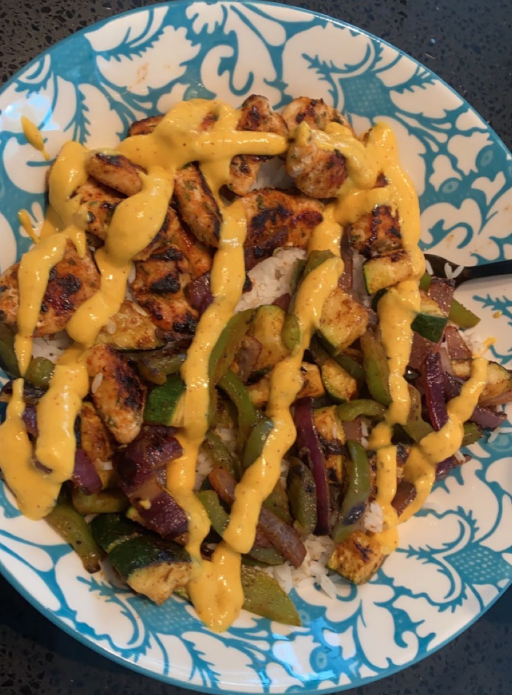
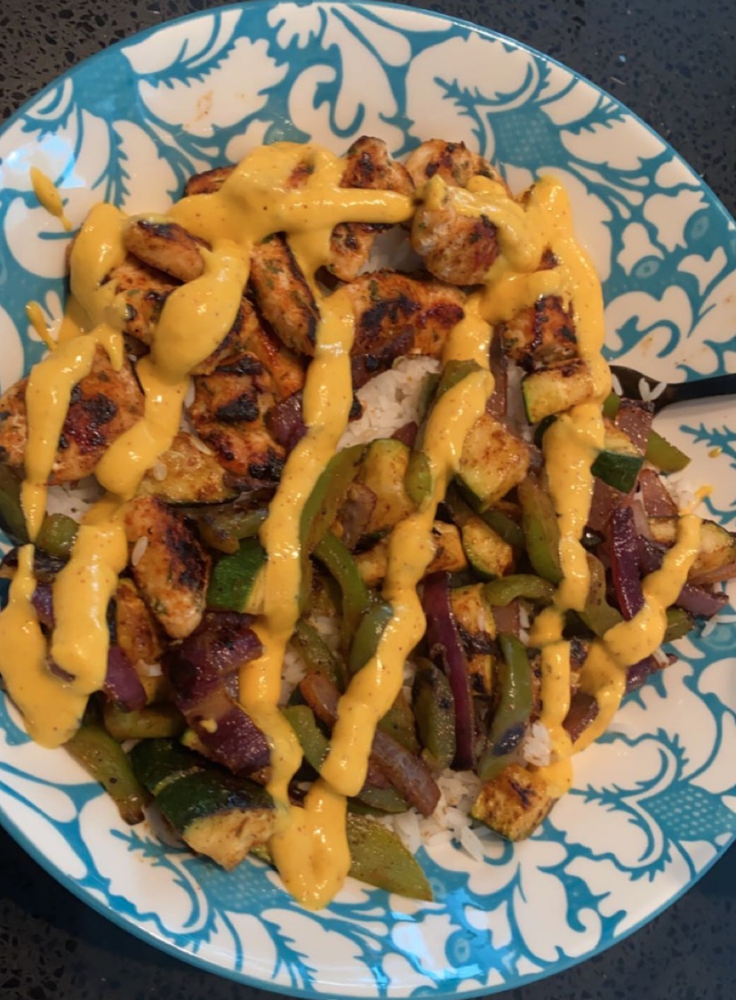

![This is the logo for [C]ODE TO COOK, an image of a spatula inside a computer.](images/logonoslogan.png)

 

An Introduction
Wednesday, June 1, 2022
Welcome to my first ever blog post! I created this blog in May 2022 after taking an online course in HTML and CSS. I decided to combine my two passions, coding and cooking, to create one "fusion" blog: [C]ode to Cook (thanks Mom for the blog name idea!). After weeks of toiling away on creating and writing every element of code you see on the screen, I finally published my site and shared it with friends and family to view. Though this started out as a final project for my computer science class, I intend to manage, update, and edit my blog as a new hobby of mine and hopefully share some of my favorite recipes with you all!
Let me start by talking about the more delicious hobby: cooking. I've always seen myself as somewhat of a chef and I enjoy cooking food for myself and mainly my family. I've been cooking since I was pretty young, taking after my dad who was always the one to prepare "fancy" dishes. I think part of me always liked the presentation more than the cooking. My mom herself went to catering school, even though she despises cooking now (ironic, right?) I guess I took after both of them somehow since I am now the designated cook of our family, especially when it comes to more intricate dishes. I'm always so excited to send pictures and videos of the well presented food I make to friends and I figured I would create this to share it with even more people.
Now onto the other topic of coding. I never really liked coding to be completely honest. In fact, last year my mom told me I should take a computer science class because it was a useful skill to know in life now. I said that was a ridiculous idea and that I had no interest whatsoever. Then, summer coming into my sophomore year, my top elective choice was cancelled and I had to quickly decide a class to take for the coming fall. I carelessly picked AP Computer Science Principles and learnt the coding language of Python, and 9 months later, it was one of the best decisions I had made. This course basically opened up so many more oppurtunities for me in what I actually want to do as a career and I can now see myself as something in this field. And even though coding in itself can be challenging, I'm always trying my best to overcome any challenges I might face and fight the urge to give up. I began to take a coding course in HTML and CSS for this final project, and after learning most of the basics, I began to apply it to this blog. It took me a long time and much more effort than I hoped for, but I finally got to where I am now. I hope this blog inspires you to take up something you love and share it with others too, because otherwise, what's the point?
I plan to split this blog up into different sections and incorporate various ideas into this platform. For one, I intend to have one distinct section for my hand-crafted recipes, and maybe another for tips and tricks I have about cooking, or maybe something I learnt about cooking in the kitchen one day. Or I might even just post about how the coding experience itself has been for me. I even want to share this out more onto social media and potentially begin a monthly newsletter to any subscribers who join. Frankly, I have no idea where this blog is going to go, but I do hope it takes us somewhere that we both enjoy!
Please be aware that this is still a work in progress and maybe not the most gorgeous website you have seen. I'm still a new web developer in-training and I admit that I have much more to learn before I truly become skilled in this field. I would love any tips and suggestions from my blog viewers, so if you do have any advice or questions for me, please do not hesitate to email me at contact@codetocook.com. And make sure to follow me on social media @c_odetocook on Instagram, and @codetocook on Twitter and Facebook. I hope you all enjoy reading my blog and I hope to share more with you soon!